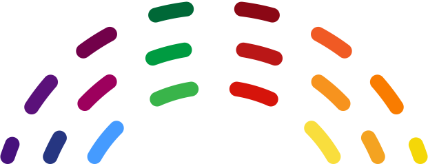

SIGNIFICADO ICONOS
| ICONO | SIGNIFICADO | TIPO SEÑAL |
|---|---|---|
| Señal Oficial del Gobierno de Chile | Video M3U | |
 |
Señal De Una Radio | Video M3U |
 |
Señal de Video de Noticias | Video M3U |
| Señal de Video | Pagina Externa Incrustrada (Iframe) / Video M3U | |
|  | Señal Oficial de la Convencion Constitucional de Chile | Video M3U |
 |
Señal de Video de Camara | Pagina Externa Incrustrada (Iframe) / Video M3U |
| Señal Oficial de la Administración Nacional de Aeronáutica y el Espacio de EEUU (NASA) | Pagina Externa Incrustrada (Iframe) / Video M3U | |
| Señal Oficial de La Agencia Espacial Federal de Rusia (ROSCOSMOS) | Pagina Externa Incrustrada (Iframe) / Video M3U | |
| Señal Oficial de La Agencia Espacial Europea (ESA) | Pagina Externa Incrustrada (Iframe) / Video M3U | |
 |
Pagina que Muestra informacion de Ubicacion | Pagina Externa Incrustrada (Iframe) |
 |
Señal en Vivo de Camara de LabPadre | Pagina Externa Incrustrada (Iframe) |
 |
Señal en Vivo de Facebook | Pagina Externa Incrustrada (Iframe) |
| Señal en Vivo de YouTube | Pagina Externa Incrustrada (Iframe) | |
 |
Señal de Video en Vivo mas Reciente de Twitch | Pagina Externa Incrustrada (Iframe) |
 |
Chat en Vivo de Twitch | Pagina Externa Incrustrada (Iframe) |
 |
Informacion de Hora | Pagina Externa Incrustrada (Iframe) |
| Muestra el Proyecto Early-Est creado por el Profesor Anthony Lomax | Pagina Externa Incrustrada (Iframe) | |
| Señal del Senado de Chile | Pagina Externa Incrustrada (Iframe) / Video M3U | |
| Indica que la Señal se agrego recientemente a la pagina | Pagina Externa Incrustrada (Iframe) / Video M3U | |
 |
Indica que la Señal de video solo transmite ocasionalmente | Pagina Externa Incrustrada (Iframe) / Video M3U |
 |
Indica que la señal de video es de una pagina web externa (Solo se uitiliza en Señales Nacionales) | Pagina Externa Incrustrada (Iframe) |
| Indica que el canal que transmite la señal esta suspedido por YouTube | Pagina Externa Incrustrada (Iframe) |
FUENTES
| OBJETO | FUENTE | ENLACE |
|---|---|---|
| BANDERAS | Flagpedia | https://flagpedia.net/ |
| TIPOGRAFIA | "Assistant" de Google Fonts | https://fonts.google.com/ |
| REPRODUCTOR M3U8 | PlayerJS | https://playerjs.com/ |
Algunos Logotipos han sido modificados para que quepan correctamente dentro del boton de seleccion de señales y se pueda ver bien.
ESTA ES UNA PAGINA SIN FINES DE LUCRO, NO TIENE PUBLICIDAD, NO HAY MONETIZACION.
Pagina basada en el Proyecto de Alplox,
y en el Proyecto de PotterSys
Creado por AINMcl
ﾠ
 ﾠSigueme en @AINMclㅤ
ﾠSigueme en @AINMclㅤ
ﾠ
ﾠCompartirㅤ